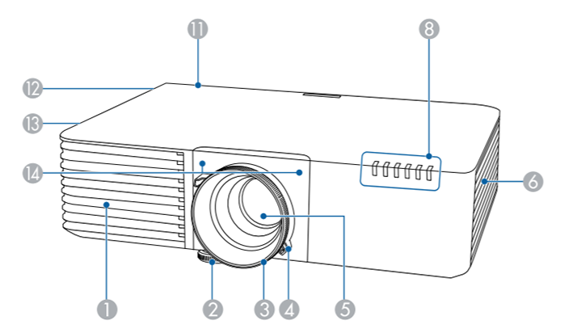
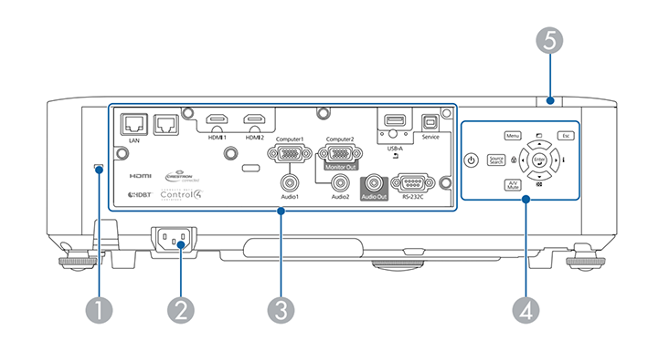
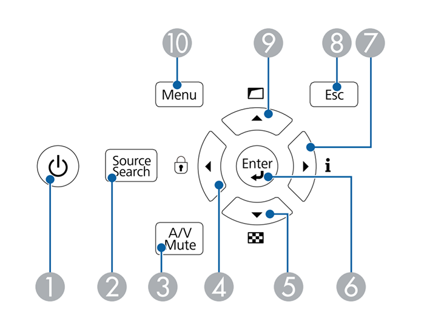

1. 投影机介绍¶
下面章节介绍投影机部件及其功能。
1.1. 投影机部件-前面/上面¶
序号 |
名称 |
功能 |
|---|---|---|
1 |
进风口 |
吸入空气以冷却投影机内部。 |
2 |
前可调撑脚 |
将投影机安装在桌子等表面上时，可展开撑脚以调节图像的位置。 |
3 |
聚焦环 |
调节图像焦点。 |
4 |
变焦环 |
调节图像大小。 |
5 |
投影镜头 |
从这里投影图像。 |
6 |
进风口（空气过滤器） |
吸入空气以冷却投影机内部。 |
8 |
指示灯 |
指示投影机的状态。 |
11 |
遥控接收器 |
接收遥控器信号。 |
12 |
扬声器 |
输出音频。 |
13 |
排气口 |
用于排出冷却投影机内部所用空气的排气孔。 |
14 |
遥控接收器 |
接收遥控器信号。 |
1.2. 投影机部件-后面¶
序号 |
名称 |
功能 |
|---|---|---|
1 |
防盗安全锁 |
该防盗安全锁孔与Kensington公司生产的微型存放保安系统兼容 |
2 |
电源插座 |
连接电源线至投影机。 |
3 |
接口端口 |
连接外部设备的线缆。 |
4 |
控制面板 |
操作投影机。 |
5 |
遥控接收器 |
接收遥控器信号。 |
1.3. 投影机部件-底面¶
序号 |
名称 |
功能 |
|---|---|---|
1 |
吊架固定点（四点） |
从吊顶悬挂投影机时，在这里安装可选吊架。 |
2 |
后撑脚 |
将投影机安装在桌子等表面上时，旋转以便展开和缩回该撑脚，从而调节水平倾斜度。 |
4 |
安全电缆安装 |
将市售线锁穿过此处并锁住。 |
5 |
空气过滤器盖螺 |
拧紧以固定空气过滤器盖就位。 |
6 |
前可调撑脚 |
将投影机安装在桌子等表面上时，可展开撑脚以调节图像的位置。 |
1.4. 投影机部件-端口接口¶

序号 |
名称 |
功能 |
|---|---|---|
1 |
Computer1端口 |
输入来自计算机的图像信号及来自其他视频源的分量视频信号。 |
2 |
Audio1端口 |
输入来自Computer1端口所连设备的音频。 |
3 |
Audio2端口 |
输入来自Computer2端口所连设备的音频。 |
4 |
Audio Out端口 |
将当前输入源的音频输出到外部扬声器。 |
5 |
RS-232C端口 |
连接RS-232C电缆以从计算机控制投影机。通常不需要使用此端口。 |
7 |
Service端口 |
此端口用于批处理设置。 |
8 |
USB-A端口 |
连接USB设备并投影影片或图像。连接选购的文件摄像机。连接无线LAN模块。 |
9 |
无线LAN模块固定螺丝 |
固定好无线LAN模块盖。 |
10 |
HDMI2端口 |
用于排出冷却投影机内部所用空气的排气孔。 |
11 |
HDMI1端口 |
从HDMI兼容视频设备和计算机中输入视频信号。 |
13 |
LAN端口 |
连接LAN电缆以连接到网络。 |
14 |
电缆支架 |
用市售线扎穿过此处将线缆固定好。 |
1.5. 投影机部件-控制面板¶
序号 |
名称 |
功能 |
|---|---|---|
1 |
电源按钮 |
打开或关闭投影机。 |
2 |
[Source Search]按钮 |
切换到下一个输入源。 |
3 |
[A/V Mute]按钮 |
暂时打开或关闭音频和视频。 |
4 |
向左箭头按钮 |
显示操作面板锁定屏幕。显示投影机的菜单或帮助时选择菜单项目。 |
5 |
向下箭头按钮 |
显示测试图样。显示投影机的菜单或帮助时选择菜单项目。 |
6 |
[Enter]按钮 |
显示投影机的菜单或帮助时，输入当前选择，并转到下一级。在从Computer1或Computer2 端口中投影模拟RGB信号时，优化投影机信号菜单中的跟踪、同步、位置。 |
7 |
向右箭头按钮 |
显示信息菜单。显示投影机的菜单或帮助时选择菜单项目。 |
8 |
[Esc]按钮 |
按下该按钮结束当前正在使用的某项功能。显示投影机的菜单时，移回上一级菜单。 |
9 |
向上箭头按钮 |
显示几何校正菜单。显示投影机的菜单或帮助时选择菜单项目。 |
10 |
[Menu]按钮 |
显示和关闭投影机的菜单。 |
1.6. 投影机部件-遥控器¶
序号 |
名称 |
功能 |
|---|---|---|
1 |
电源按钮 |
打开或关闭投影机。 |
2 |
[Computer]按钮 |
在Computer1和Computer2端口之间切换图像源。 |
3 |
[HDMI]按钮 |
在HDMI1和HDMI2端口之间切换图像源。 |
4 |
数字按钮 |
按下[Num]按钮的同时，在投影机的菜单中输入数字。 |
5 |
[Auto]按钮 |
在从Computer1或Computer2端口中投影模拟RGB信号时，优化投影机信号菜单中的跟踪、同步、位置。 |
6 |
[Aspect]按钮 |
更改外观模式。 |
7 |
[Num]按钮 |
按住此按钮以使用数字按钮输入数字。 |
8 |
[Menu]按钮 |
显示和关闭投影机的菜单。 |
9 |
箭头按钮 |
显示投影机的菜单或帮助时选择菜单项目。 |
10 |
[Enter]按钮 |
显示投影机的菜单或帮助时，输入当前选择，并转到下一级。 |
11 |
[User]按钮 |
执行在投影机设置菜单的用户按钮设置中分配的设置。 |
12 |
[Page]向上/向下按钮 |
通过网络连接投影机和计算机时，在计算机上控制向上/向下翻页。使用PC Free功能时显示上一个或下一个屏幕。 |
13 |
[E-Zoom]+/-按钮 |
放大或缩小图像区域。 |
14 |
[A/V Mute]按钮 |
暂时打开或关闭音频和视频。 |
15 |
[Split]按钮 |
通过分离投影屏幕同时，投影不同图像源中的两个图像。 |
16 |
[Home]按钮 |
显示和关闭主屏幕。 |
17 |
[Freeze]按钮 |
暂停或恢复图像。 |
18 |
[Volume]升高/降低按钮 |
调节扬声器音量。 |
19 |
[Pointer]按钮 |
显示屏幕光标。 |
20 |
[Esc]按钮 |
按下该按钮结束当前正在使用的某项功能。显示投影机的菜单时，移回上一级菜单。 |
21 |
[ID]按钮 |
按住该按钮并按数字按钮可选择您想要使用遥控器操作的投影机识别号。 |
22 |
[Color Mode]按钮 |
更改颜色模式。 |
23 |
[Link Menu]按钮 |
显示链接到投影机HDMI端口的设备的设置菜单。 |
24 |
[LAN]按钮 |
在网络连接设备之间切换图像源。 |
25 |
[USB]按钮 |
将USB-A端口选作图像源。 |
26 |
[Source Search]按钮 |
切换到下一个输入源。 |
27 |
遥控发光部位 |
输出遥控器信号。 |